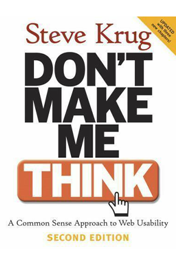
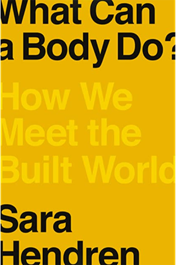
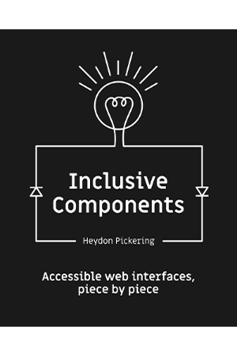
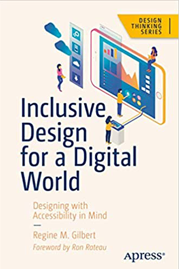
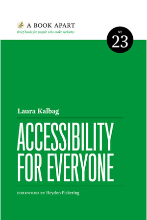

Here are the 5 Best Books about Inclusive Design
It can be exhausting to stare at a screen all the time! If you're looking for some new books, you've come to the right place. These books are all about inclusive design.
Don't Make Me think
Steve Krug
This book has been dubbed an "instant classic" on web accessibility for a reason. Don't Make me Think offers practical advice for novice and experience web designers. It provides both technical insite on web accessibility practices, and how to survive design whims from executives. If you think usability is the opposite of design, this book is for you!
What Can a Body Do? How We Meet the Designed World
Sara Hendren
Sarah Hendren is a designer who wrote a book about her experiences as a professor. She tells stories of the objects that have been designed in her class such as a lectern for a woman of small stature. While telling her stories, she explores the idea of what it means for something to be accessible and how people interact with objects. She wants the reader to think of everyday objects like forks as assistive devices. Although this book isn't about inclusive web design, this is a thoughtful book about how the design process can include everyone.
Inclusive Components
Heydon Pickering
This is a technical guide for people who want to learn how to code in an inclusive way. Pickering mentions several times that he is not a computer scientist, but a person who loves computers and wanted to learn how to code. He says that writers are best at HTML and designers are the best at CSS. Each chapter gives an explanation on how to create inclusive web components such as toggle buttons, theme switchers and data tables. He also will talk about common misconceptions about inclusive code throughout the chapters as well. This book will serve as a guide to help me create my website about web inclusivity and give me inspiration for the content on the site.
Inclusive Design for a Digital World: Designing with Accessibility in Mind
Regine M. Gilbert
Regine Gilbert is a user exerience design professor who explores the responsibilites of designers to implement inclusive design elements. Gilbert covers the Web Content Accessibility Guidelines (WCAG) 2.1 requirements, emerging technologies such as VR and AR, best practices for web development, and more
Accessibility For Everyone
Laura Kalbag
If you are looking for an all-encompassing book about web accessibility, this book if for you. Kalbag's goal is for the reader to better understand understand disability and impairment challenges; get a handle on important laws and guidelines; and learn how to plan for, evaluate, and test accessible design. The forward of this book was even written by our guy Heydon Pickering!
Conclusion
Hopefully you can find some freetime to pickup one of these awesome books. Head over to the community and see the discussion